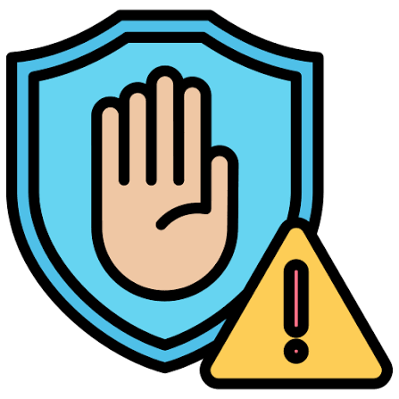

La prevención es fundamental para proteger nuestra salud física, emocional y social. Durante la adolescencia es importante reconocer situaciones de riesgo, informarnos correctamente y tomar decisiones responsables que favorezcan nuestro bienestar.
Prevenir también significa aprender a establecer límites, respetar nuestras decisiones y las de los demás, evitar situaciones de presión social y buscar orientación cuando tengamos dudas. La comunicación con familiares, docentes y profesionales de confianza puede ayudarnos a tomar mejores decisiones.
La educación y el acceso a información confiable nos permiten prevenir riesgos, incluyendo embarazos no planificados e infecciones de transmisión sexual. Conocer nuestros derechos y actuar con responsabilidad nos ayuda a construir un futuro más seguro y saludable.